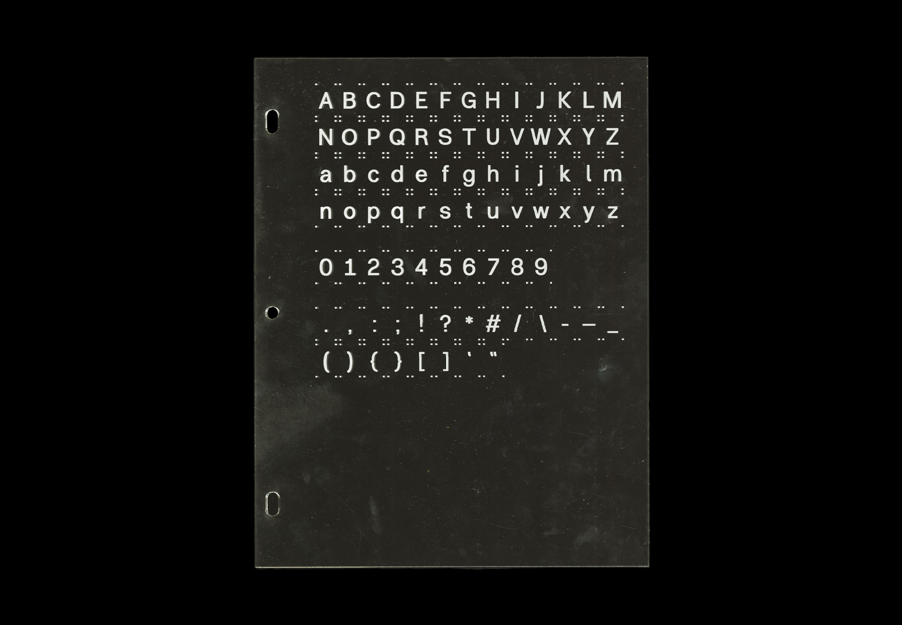

AC-1
Font Design
Description
AC-1 is a modest typeface that critically responds to traditional notions of neutrality and objectivity, focusing instead on functionality and accessibility. It was inspired by ideas of authorship, respect, and responsibility for language.
Images

AC-1 rejects traditional ideas of visual objectivity and neutrality. Instead, it favors principles of visual modesty and humility.

By designing for legibility and versatility, AC-1 is a highly functional typeface, suitable for usage in a variety of contexts.
AC-1 typesetting empirically objective models such as the Periodic Table of Elements.
AC-1 typesetting literary and qualitative research.